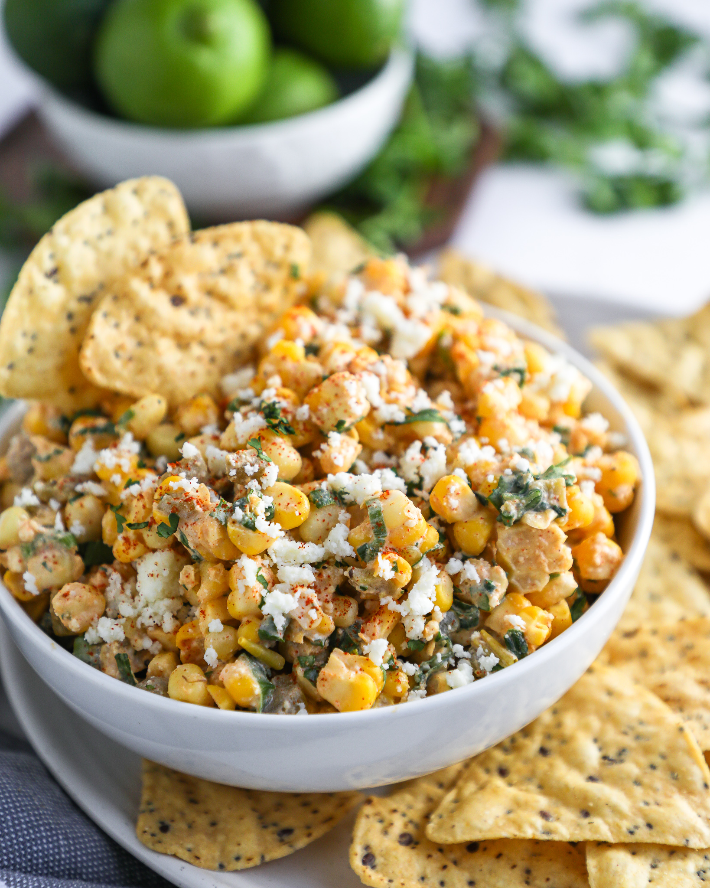

You can't celebrate Cinco de Mayo without our famous Mexican street-style corn dip that is absolutely to die for. Sweet corn and cotija cheese team up to create the tastiest appetizer dip ever. Don't forget the to-go plates because this dip is definitely left-over-worthy!
